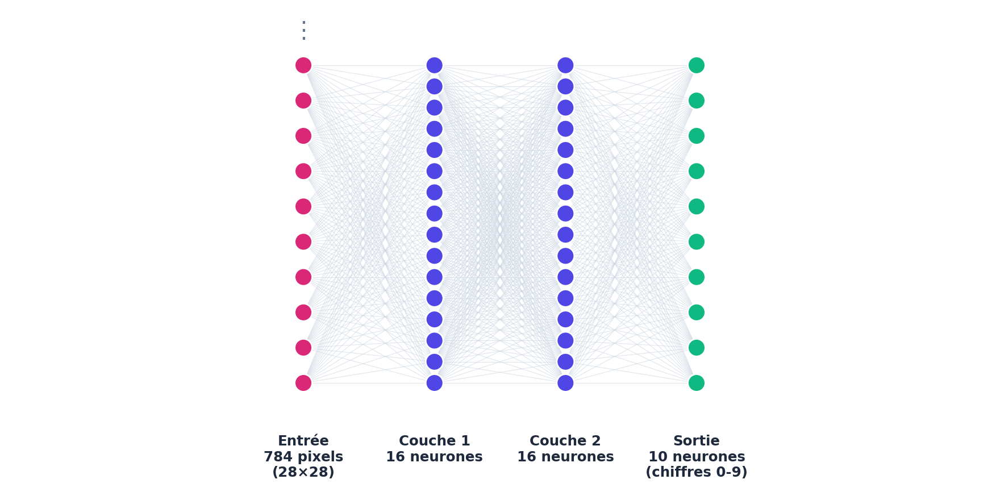
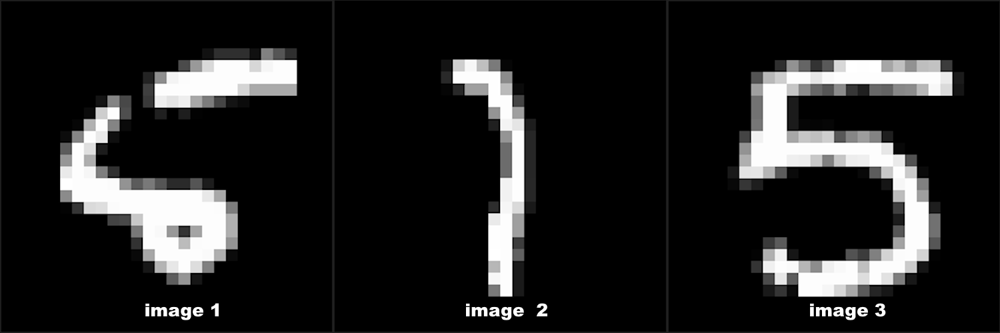
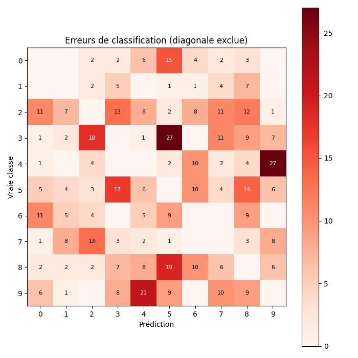

Projet personnel · Machine Learning
Réseau de neurones from scratch
Implémentation d'un réseau de neurones entièrement en Python/NumPy — sans framework de deep learning — entraîné à reconnaître des chiffres manuscrits sur le dataset MNIST, avec rétropropagation codée à la main.

Contexte
Beaucoup d'outils de machine learning s'utilisent aujourd'hui comme des boîtes noires : quelques lignes avec Keras ou PyTorch suffisent à entraîner un modèle sans jamais toucher aux mathématiques sous-jacentes. Je voulais comprendre ce qu'il se passe réellement à l'intérieur d'un réseau de neurones — comment il apprend, comment l'erreur se propage en arrière à travers les couches, comment les poids se mettent à jour.
En me basant sur la série de vidéos de 3Blue1Brown sur les réseaux de neurones, j'ai décidé d'implémenter l'ensemble du pipeline — propagation avant, fonction de coût, rétropropagation, descente de gradient — uniquement avec NumPy, puis de l'entraîner sur le dataset classique MNIST (chiffres manuscrits 0-9).
Objectifs
L'objectif n'était pas la performance brute (des architectures bien plus efficaces existent), mais la compréhension complète de la chaîne : écrire soi-même chaque équation de la rétropropagation, la comparer au calcul par différences finies pour vérifier sa justesse, puis observer concrètement l'effet de l'entraînement sur les poids et les performances du modèle.
Conception
Un réseau de neurones est un système adaptatif qui apprend à partir de données grâce à des unités interconnectées (les neurones), organisées en couches successives — une structure qui s'inspire, très schématiquement, du fonctionnement du cerveau. Avant de construire le réseau complet, il faut donc d'abord comprendre ce qu'est un neurone isolé, puis comment on les assemble en couches.
Le neurone
Un neurone artificiel est simplement une fonction affine — une somme pondérée des entrées, plus un biais — suivie d'une fonction d'activation. Si un neurone reçoit en entrée trois valeurs $x_1$, $x_2$ et $x_3$ (toutes comprises dans $[0\,;1]$), il possède alors trois poids $w_1$, $w_2$, $w_3$ — un par entrée — et un biais $b$. On note $z$ la sortie de cette partie affine :
Les poids représentent l'importance de chaque entrée dans la décision du neurone, et le biais permet de décaler le seuil d'activation. Comme les entrées sont dans $[0\,;1]$ (elles représentent une contribution, une intensité), on veut que la sortie du neurone le soit aussi. On compose donc $z$ par une fonction bijective de $\mathbb{R}$ vers $[0\,;1]$, le plus souvent la sigmoïde (j'ai retenu ce choix pour ce projet) ou la fonction ReLU :
La sortie $a$ d'un neurone — son activité — s'écrit donc, en généralisant à $N$ entrées et en notant $l$ la couche à laquelle il appartient et $i$ son indice dans cette couche :
Autrement dit, l'entrée d'un neurone est simplement l'ensemble des sorties (activités) des neurones de la couche précédente.
Structure en couches
Le réseau est un perceptron multicouche simple. La couche 0 est la donnée d'entrée : une image du dataset MNIST, aplatie en un vecteur de 784 valeurs (28 × 28 pixels, normalisées entre 0 et 1). Viennent ensuite deux couches cachées de 16 neurones chacune, puis une couche de sortie de 10 neurones — un par chiffre possible (0 à 9) — dont on peut normaliser les activités pour les interpréter comme des probabilités.
Avec cette architecture, le nombre total de paramètres appris par le réseau (poids et biais de toutes les couches) est de :
En version matricielle — c'est celle réellement utilisée dans le code, NumPy étant bien plus efficace sur des opérations vectorisées que sur des boucles neurone par neurone — la propagation avant s'écrit, pour chaque couche $l$ :
Fonction de coût
Pour évaluer la performance du réseau sur une image donnée, on compare son activité de sortie $a^{(L)}$ (la dernière couche $L$) à l'étiquette réelle. Cette dernière est encodée en one-hot : un vecteur de 10 éléments, tous nuls sauf celui correspondant au bon chiffre, qui vaut 1. Par exemple, pour un 8 :
L'écart entre la prédiction et cette valeur attendue est mesuré par l'erreur quadratique moyenne (ce n'est pas la seule fonction de coût possible, mais c'est la plus simple à dériver à la main) :
où $E$ désigne l'ensemble des données d'entraînement. L'objectif de l'entraînement est de trouver les poids et biais qui minimisent cette fonction $C$ — un problème d'optimisation à 13 002 variables.
Rétropropagation
La partie la plus délicate est la rétropropagation : il s'agit de calculer, couche par couche en partant de la sortie, à quel point chaque poids et chaque biais sont responsables de l'erreur finale, afin de suivre le gradient de $C$ dans le sens qui la fait diminuer.
On introduit pour cela la notion d'erreur locale $\delta_j^{(l)}$ du $j$-ème neurone de la couche $l$, définie comme la sensibilité du coût à une petite variation de $z_j^{(l)}$ :
En appliquant la règle de la chaîne (dérivation composée), on obtient une expression pour la dernière couche, puis une relation de récurrence qui permet de calculer l'erreur d'une couche à partir de celle de la couche suivante — d'où le terme de rétro-propagation, puisqu'on remonte le réseau de la sortie vers l'entrée :
Ce qui, en écriture matricielle (avec $\odot$ le produit de Hadamard, terme à terme), donne la forme réellement implémentée dans le code :
Une fois les erreurs locales connues, les dérivées partielles du coût par rapport aux poids et aux biais s'en déduisent directement (toujours par la règle de la chaîne) :
Ces gradients ne valent que pour une seule image ; pour optimiser sur l'ensemble du jeu de données, on les moyenne sur $E$. En pratique, la norme du gradient est souvent trop grande pour converger proprement vers un minimum — on introduit donc un taux d'apprentissage $\eta$, petit devant 1, qui contrôle l'amplitude de chaque mise à jour :
Il ne reste alors plus qu'à répéter cette étape — propagation avant, calcul du coût, rétropropagation, mise à jour des paramètres — un nombre suffisant de fois (les epochs) pour que le réseau converge vers une solution satisfaisante.
Réalisation
Le projet est séparé en deux scripts. Le premier,
neural_network_optimizate.py, charge le dataset MNIST
(CSV), initialise les poids et biais aléatoirement, puis entraîne le
réseau sur plusieurs epochs en enregistrant à chaque itération la loss
et l'accuracy. Les poids finaux sont sauvegardés au format CSV.
Le second script, use_a_model.py, recharge les poids
entraînés et les applique à un nouveau jeu de données (le test set de
MNIST) pour évaluer la généralisation du modèle. Il permet également
de visualiser l'importance moyenne de chaque pixel dans la première
couche, une façon simple de voir quelles zones de l'image le réseau
utilise le plus pour ses prédictions.
Résultats
Le réseau a été entraîné sur les 60 000 images du jeu d'entraînement MNIST et évalué sur les 10 000 images du jeu de test, avec la configuration suivante :
| Paramètre | Valeur |
|---|---|
| Architecture | 784 → 16 → 16 → 10 |
| Fonction d'activation | Sigmoïde |
| Fonction de coût | Erreur quadratique moyenne |
| Learning rate (η) | 0.01 |
| Nombre d'epochs | 20 |
| Taille du dataset d'entraînement | 60 000 |
| Taille du dataset de test | 10 000 |
Après entraînement, le modèle atteint une accuracy de 95,77 % sur le jeu de test (94,70 % sur le jeu d'entraînement), pour une loss finale de 0,0709. Comme attendu avec une fonction de coût quadratique et une activation sigmoïde sur toutes les couches, l'entraînement présente un plateau initial caractéristique — les gradients restent très faibles tant que les neurones de sortie sont proches de leur zone saturée — suivi d'une phase d'apprentissage rapide une fois ce plateau franchi.

Quelques exemples d'images du jeu de test, avec la prédiction du modèle face au label réel :

| Image | Prédiction | Label réel | Correct ? |
|---|---|---|---|
| 1 | 6 | 5 | ❌ |
| 2 | 1 | 7 | ❌ |
| 3 | 5 | 5 | ✅ |
Observations
Sur l'ensemble des tests, certains chiffres sont plus souvent confondus que d'autres — en particulier le 3 et le 5, dont les tracés manuscrits peuvent être visuellement proches. Dans l'ensemble le modèle reste très performant, et certaines de ses erreurs ne sont d'ailleurs pas évidentes non plus pour un œil humain, comme le montrent les exemples ci-dessus.
Pour visualiser l'ensemble des erreurs de classification, j'ai tracé une matrice de confusion sur le jeu de test :
